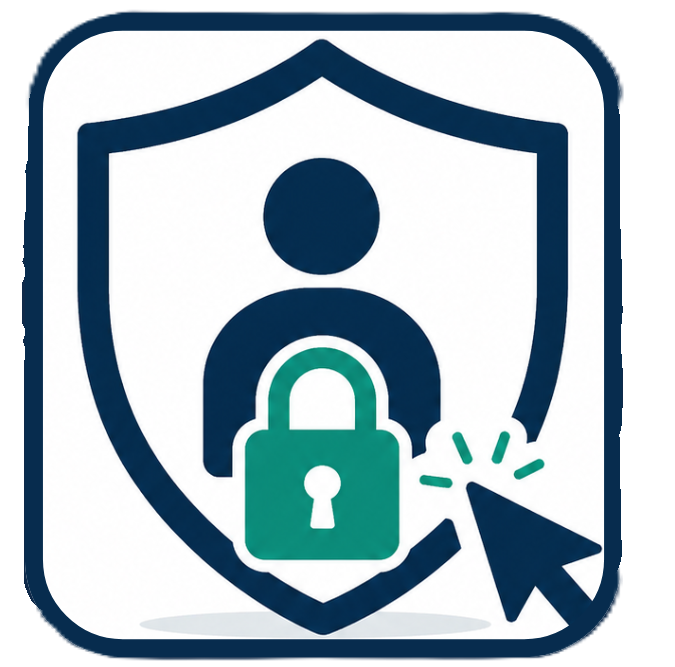

Cybersecurity
Awareness
Awareness
Free Course
Cybersecurity Awareness
for Employees
Learn to recognize and defend against phishing, social engineering, and common cyber threats in your daily work environment.
Course Instructor
Tharaa Abou Alhassan
Information Engineering · Cybersecurity Researcher
5
Modules
15
Lessons
EN/AR
Captions
Your Progress
0%
Course Content
Module 1
Getting Started with Cybersecurity
3 lessons

Welcome & Course Overview
An overview of the course highlighting the importance of cybersecurity awareness.
1:08

Phishing and Ransomware
Learn how phishing tricks users into giving access and leads to ransomware.
1:06

Insider Threats
Insider threats occur when trusted individuals misuse access to sensitive information.
7:00
Module 2
Password Management
3 lessons

Why Password Management Matters
Password management is essential to protect accounts from unauthorized access.
1:30

How Attackers Guess Passwords
Attackers use brute force, phishing, and social engineering to steal passwords.
2:05

How to Create a Strong Password
Strong passwords require uniqueness, complexity, MFA and password managers.
3:00
Module 3
Phishing
4 lessons

Email Phishing
How fake emails steal your information
1:28

Phishing Email Analysis
Identify red flags in phishing emails
2:40

Phishing Techniques
Different phishing attack methods explained
2:48

Prevention & Response
How to respond and prevent phishing attacks
2:00
Module 4
Malware & Ransomware
4 lessons

Understanding Malware
A simple overview of malware, how it affects your system, and the most common types you need to recognize and avoid.
2:57

Preventing Malware
Simple and effective habits to protect yourself from malware and avoid common online threats.
1:15

Malware vs Ransomware
Learn the difference between malware and ransomware and how these attacks can impact your data and security.
1:00

Behind Ransomware
Understanding the organized cybercrime groups, their methods, and why they pose a serious threat to everyone.
1:21
Module 5
Cybersecurity Scenario
1 lesson

From One Click to Full Attack
A realistic scenario showing how a simple phishing mistake can escalate into an attack—and how the right response and daily awareness can prevent serious damage.
1:25